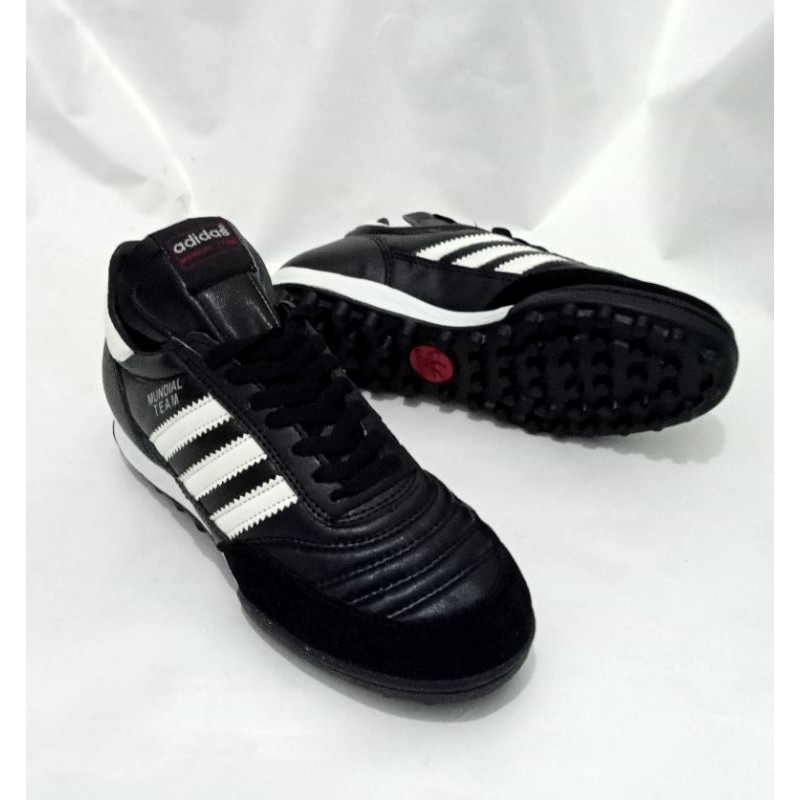

Tienda "90 Minutos"
"Acompañando dentro y fuera de la cancha.."
Calzado
- Zapatillas Deportivas:
- Botines:
- Botines de Pista:
Zapatillas Athix "Soma"
Calzado para uso diario que garantiza la libertad y el relax al caminar mediante su su base fabricada en poliuretano de eva expandida. El tramado de la capellada otorga respiración y pureza a la hora de oxigenar el pie. Disponible en los talles 38 al 42: $8.500
Agregar al carritoZapatillas Athix "Paralles"
Este producto esta confeccionado siguiendo los parámetros geométricos que permiten una capellada ligera con una buena base de apoyo y amortiguación. Disponible en los talles 36 al 43: $10.800
Agregar al carritoZapatillas Athix "Self"
La zapatilla SELF es un calzado confeccionado con Mesh. Una malla 100% poliester suave, inteligente y refrigerable con perfecto calce al pie. No posee lengüeta. Por lo que es recomendable solicitar un talle mas del habitual. Disponiible en los talles 38 al 43: $6.250
Agregar al carritoBotines Athix "talent Campo"
Producto confeccionado en cuero natural vacuno que prolonga la longevidad del botín, disminuye la temperatura interior al estar en movimiento favoreciendo a que el pie disminuya la presión recibida permitiéndole responder más rápido y efectivamente. Disponible en los talles 36 al 40: $10.500
Agregar al carritoBotines Diadora "Clasico Field"
El botín CLASICO FIELD es un producto tradicional realizado en materiales sintéticos sometidos a un tratamiento especial con químicos, que le da una suave textura y una amplia elasticidad. La suela es de PVC resistente a la erosión, y la altura de los tapones es la ideal para todo tipo de terreno. Disponible en los talles 39 al 42: $11.100
Agregar al carritoBotines Umbro "Neo Striker"
Nuevo modelo NEO STRIKER, confeccionado en materiales sintéticos de alta calidad, logo aplicado en serigrafía y alta frecuencia. Suela de TPU con tapones fijos. Ideal para pasto natural. Se recomienda comprar un talle más. Horma chica. disponible en los talles 39 al 43: $12.250
Agregar al carritoBotines de Pista Athix "Fury TF"
Botín generado en material sintético que proporciona calce anatómico, ajuste continuo y sensibilidad táctil al contacto con el balón. Además posee una suela tricolor, cada parte con un material diferente según el desgaste o aplicación que se necesita. Disponible en los talles 39 al 43: $10.599
Agregar al carrito
Botines de Pista Diadora "Degrade classic TF"
Este botín tiene en su capellada las mismas especificaciones que el clásico campo. La suela es de dos componentes que poseen diferentes cualidades: El tr otorga la absorción de los impactos y el caucho ranurado permite afirmarse y desplazarse con seguridad. Disponible en los talles 39 al 43: $11.999
Agregar al carritoBotines de pista Umbro "Attak II"
Capellada en laminado sintetico. Diseño clasico con trabajos de alta frecuencia. Plantilla en EVA. Suela de caucho con tapones hechos a medida para el cesped sintetico. Disponible en los talles 38 al 42: $11.199
Agregar al carrito